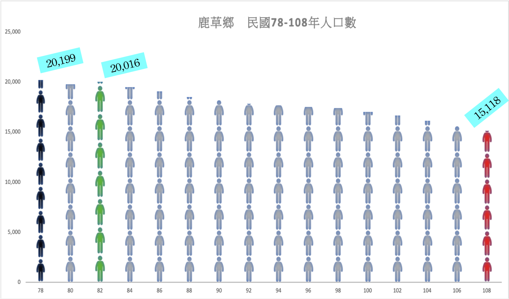
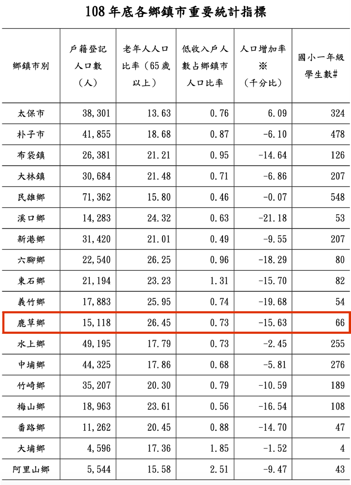
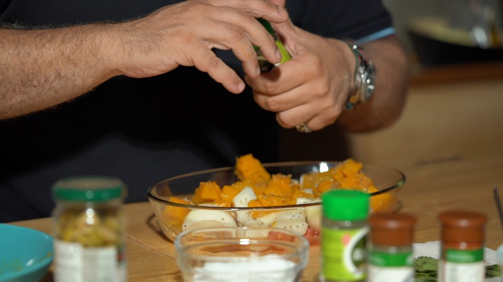
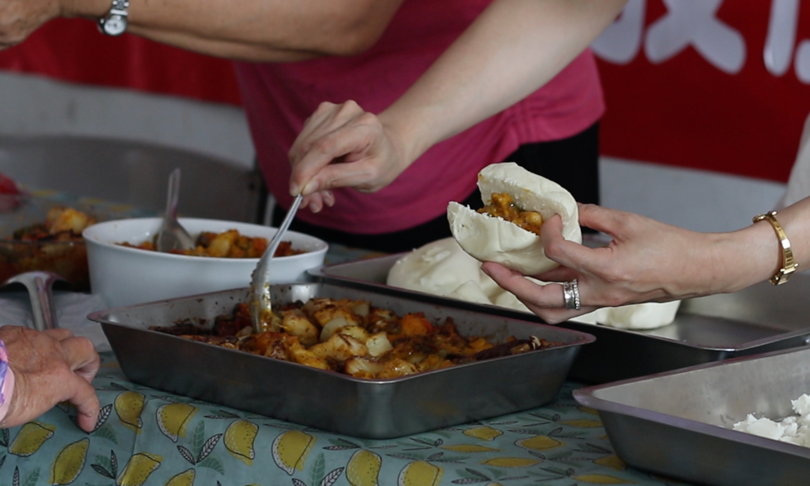

當鹿草遇到希臘：一個老獸醫發起的地方共食行動
優越的地理位置，讓嘉義縣鹿草鄉物產豐富。西瓜幼苗、沙漠玫瑰、羊奶以及蜂蜜，許多產業都在這裡發光發熱。不過，鹿草鄉老年人口卻超過百分之二十六，是台灣一般鄉鎮的三倍之多。超高齡化和青壯人口外移，讓鹿草逐漸失去往日顏色。
(背景圖為嘉義縣鹿草鄉鄉公所門前)
「各位鄉親大家好，今天很高興來到嘉義鹿草鄉,跟大家介紹這道菜。可以看到我們桌面上這些食材，其實在鹿草都可以隨手可得，這就是我們夏天很基本的蔬果，在法國這道菜叫做ratatouille，那在我的家鄉希臘，這道菜叫tolutolu（音譯）。」
來自希臘的Kostis Agrafiotes，曾經做過英國和法國知名品牌的服裝總監，卻為了鹿草鄉下潭村舉辦的「地方共食」，搖身一變成為廚師。Kostis介紹著家鄉菜「tolutolu」的食材，包括櫛瓜、馬鈴薯、茄子、洋蔥和新鮮的番茄。這些食材在鹿草鄉俯拾皆是，卻是希臘當地用來「地方共食」，鏈結社區情感的重要橋樑。
歐洲的克里特島四面環山物產豐富，地理環境和鹿草極為相近。希臘和嘉義鹿草，地理位置相隔九千公里，卻因為tolutolu這道美食，意外的串連在一起。
其實，這是109年社區環境調查與改造計畫的一環。主持人、僑光科技大學生活創意設計系副教授施文瑛，說明她在希臘克里特島，遇見一個退休的可口可樂總裁，給了她這個「地方共食」的靈感。
施文瑛回憶，她在希臘遇見一位可口可樂的退休總裁，回到希臘村莊重新耕耘。他開了民宿，然後集齊了地方農產品，帶著農民一起耕作。同時，將食材納入餐廳飲食，讓旅遊的觀光客，瞭解物產到底有甚麼？這些物產能夠產生餐桌上甚麼樣的食物？這樣「地方共食」計畫，可以讓當地人，特別是以農為主的在地民眾有親身的體驗。
施文瑛表示，這次透過希臘的tolutolu，希望可以讓共食這個概念在鹿草鄉慢慢地發酵。她也希望，以地方共食為起點，結合當地二手市場、農產品交流，可以讓年輕人注意家鄉亮點，營造未來可以支撐返鄉的經濟條件。
(背景圖為Kostis Agrafiotes 制作Tolutolu過程)
鹿草村位於嘉義市的西南方，地理位置得天獨厚，物產非常豐富。這邊嫁接的西瓜幼苗，市佔率高達全台的百分之七十，不只西瓜苗，各式各樣的幼苗因為這邊的好山好水，獲得良好的成長環境。除了這些，蜂蜜、羊奶，許多物產在這片土地發光發熱。
鹿草鄉國雄育苗場的負責人陳智信，談到當初回鄉的動機說，出生到現在已經五十幾年了，在這之間也是有出去工作。後來，因為父母親年紀也大了，家裡面又缺人手，想說回來家裡幫忙。類似的狀況，普遍存在嘉義縣鹿草鄉。一般說來，65歲人口數超過百分之七，就可以稱為人口老化。但在鹿草鄉，老年人口卻超過百分之二十六，是台灣一般鄉鎮的三倍之多。
閒暇之餘回家幫忙的鄧全松，是家中的二兒子，看到父母親養蜜蜂，必須四處奔波，週末一有空檔就回家幫忙。類似的狀況也存在沙漠玫瑰農場。欣禾園藝老闆娘李世慧，協助老公張永明持家，辛辛苦苦打造溫室植栽的園地。當兒女成長出外工作後，平日園藝的大小事情，主要都靠兩夫婦完成。滿園花團錦簇，但是扛起重擔的，都是在地的爸爸媽媽。
(背景圖為養蜂場負責人 鄧全松)
鹿草當地的老獸醫沈幸正，早年行醫足跡遍佈雲嘉南各地。八十年代初期，他帶了三隻小羊回到鹿草，開始了川旺牧場。除了平常供觀光客和當地小朋友觀賞外，眼看鹿草當地人口老化嚴重，年輕人流失得厲害，他希望能夠在鹿草家鄉，摸索出社區經營模式，讓年輕人返鄉，回到鹿草進行在地耕耘。
川旺牧場位於嘉義縣鹿草鄉的下潭村。沈幸正將他改建成小型的咖啡廳，裡頭擺滿了牧場羊隻的衍生商品，不管是羊乳片、饅頭、肥皂、冰棒或是蛋捲，這些商品都是牧場自製。沈幸正的女兒沈虹君，目前在台台南科技工業園區上班，週末才回家幫忙。沈幸正把構想交給了女兒，希望能夠落實社區營造的初衷。
沈虹君說，最一開始的想法是她爸爸提的。那時候他們參加這些社區活動時，就會有一些想法與觀念，教育他們要去做地方創生。這個問題又連結到了現在台灣的整個社會上老年化，很多現在在討論的問題，像是「怎麼去做長照2.0」，其實都是因為這個問題出發來的。我就會想到，萬一爸爸也失智了怎麼辦？哪天如果他們也走到了這一條路怎麼辦？
因緣際會下，沈虹君去聽一次環保局的企劃案發現，其他社區早在以前就已經在做地方創生。她心想，如果做得起來的話，那我們是不是之後也可以去把它擴大，然後讓更多人來參與。甚至可以讓年輕人發現，覺得我們社區是有活力的，讓他們去思考是不是有機會回來發展。
目前在鹿草執行的規畫，是希望能夠藉由一個在地農產品的推廣，讓在地的長者他們加入。沈虹君提醒，除了每天起床看電視，當地鄉親還是可以做很多事情來延緩老化，讓他們有成就感。這種經營才能讓社區存有永續發展的可能，讓社區留得住人，也才能做出一些東西。
(背景圖為小學生觀光川旺牧場)
沈虹君找了自己的表姐、僑光大學的施文瑛副教授，兩個姊妹淘從鹿草鄉下潭村做起，希望完成老獸醫沈幸正的夢想。她們的起點，是希望從「地方共食」開始做起，結合大學生和學校資源，透過地方共食的概念，鏈結彼此的情感，接下來，才能夠將資源帶進鹿草來。
施文瑛是在這邊土生土長的嘉義人，自從父親在台中工作後，全家搬離嘉義。對她而言，這裡有很多包含童年的回憶，像是小時候爺爺帶她去西瓜園採西瓜，然後去姑姑家吃飯。長大之後，她覺得自己應該回來最原始的根源，到父親的家鄉，也給自己一個機會去尋根。
過去十幾年在歐洲求學，施文瑛看到很多歐洲地方創生的計畫。當地年輕人，對自己家鄉投入。回到台灣，施文瑛看到2019年地方創生的計畫，她認為不投入自己家鄉，是一件非常可惜的事情。
去國多年後，施文瑛回到鹿草，驚訝地發覺基礎建設提升許多。不只保留地方的乾淨與純樸，也變成了一個相當適合居住的村落。施文瑛明白，地方創生的原動力是「人」，再多的學界資源也比不過對於鄉村的認同。
施文瑛說，自己也是邊走邊做邊學，逐步瞭解地方需要。本來在做這個地方創生本來就不是一蹴可幾，需要時間經年累月的積累。她觀察鹿草的地方資源並且盤點可以跟學界鏈結的地方，希望能把產業的資源帶進來鹿草。
(背景圖為僑光大學副教授 施文瑛)
六月七日當天，Kostis Agrafiotes把來自希臘的tolutolu端上桌面後，在場鹿草鄉親大家試著品嚐這道地中海美食。大家將牧場裡自製的羊奶饅頭、配合羊乳酪，有點像台灣刈包一樣，夾著tolutolu吃下去。吃下去的，其實是滿滿的幸福。
地方共食，凝聚社區意識，要從味蕾開始。儘管距離九千公里遠，但這是希臘好朋友，和嘉義鹿草鄉親分享的第一課。
(背景圖為川旺牧場負責人 沈幸正)
從鹿草鄉歷年人口數據中可以看出，除民國82年鹿草鄉人口數有些微成長1.4％，從民國78年起，人口數從20199人，每年都是負增長。直到108年，鹿草鄉總人數只剩下15118人，流失了超過四分之一，其中絕大部分是青壯人口。按照聯合國規定，65歲以上的老年人口比例占總人口7％，就可以稱為人口高齡化。鹿草鄉65歲以上的老年人口，高達26.45％，超高齡的趨勢令人觸目驚心。

(鹿草鄉於民國78-108年人口都呈負增長)

(鹿草鄉老年人人口比率已達超高齡社區指標)
地中海美食tolutolu，是希臘當地民眾熟知的料理。製作時，食材在嘉義鹿草隨手可得，包括茄子、小黃瓜、蕃茄、洋蔥、馬鈴薯、南瓜；在調味方面，包括義大利和匈牙利香料，以及胡椒粉、羅勒葉、薄荷葉、橄欖和橄欖油。
在烹飪時，首先要將準備好的蔬菜進行川燙，特別是番茄，必須利用川燙將外面的皮去掉；南瓜要泡在熱水當中，才會變得比較軟，馬鈴薯也是；要注意的是，茄子不用進行川燙，只要泡在加鹽的冷水即可。使用鹽水目的，在於將茄子的苦味去掉，吃這道菜時才不會被苦味干擾。
接著，要先把番茄汁淋在盤子底下，以免底部烤焦，再加一點橄欖油，放入先前準備的洋蔥切片後，加入馬鈴薯和南瓜，然後可以開始加入羅勒粉，如果家裡有新鮮的羅勒會更好。在烹飪過程中，加入義大利香料、黑胡椒，接著繼續加入番茄，也可以根據個人口味加入小黃瓜，最後再放上茄子。由於茄子比較難烤，放在最上層加熱能才能均勻，更容易熟透。烹飪完成後，上面灑點鹽巴，倒上豐富的橄欖油增加香味。
在tolutolu進入烤箱前，要先預熱15至20分鐘，預熱溫度是220度。要注意的是，烤箱上下的熱源都要處理，如果有抽風機要記得打開。半小時後，可以把烤盤拿出來，在上面淋點義大利醋。最後，要確認烤蔬菜是否完成，你可以拿出來用食具攪拌它，讓這道菜受熱更均勻，並確保底部蔬菜都能平均受熱，約15分鐘，這道地中海美食就完成了。
(背景圖為Tolutolu制作前要準備的一些食材與調味)

(主廚正在為食材加入羅勒粉)
鹿草鄉青壯人口流失、社區超高齡化問題日趨嚴重。僑光科技大學生活創意設計系副教授施文瑛和川旺牧場負責人女兒沈虹君兩人，特別以「鹿草鄉下潭村」名義，聯袂申請109年社區環境調查及改造計畫，希望將社區改造，結合地方共食、環保影像教學等環節，來改造當地的社區概念。地方共食，提供社區老人共聚一堂的機會，鏈結彼此的情感，是改造鹿草鄉下潭村社區的第一步。
(背景圖為社區共食畫面)

(共食活動的食物Tolutolu)